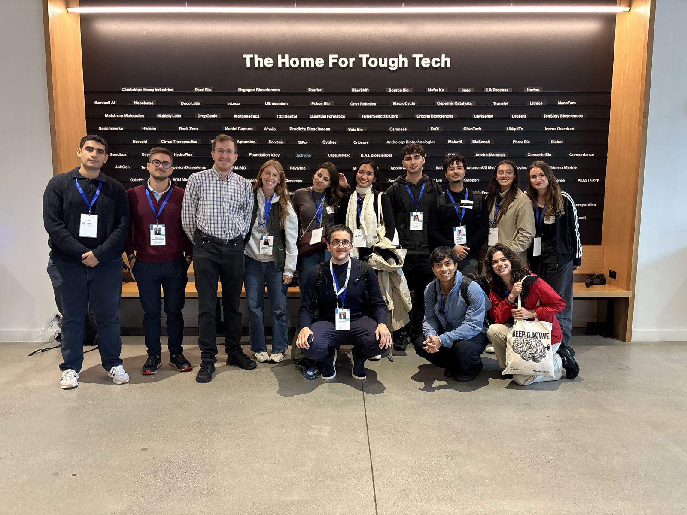
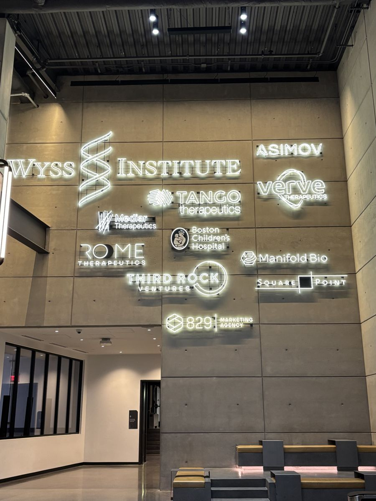
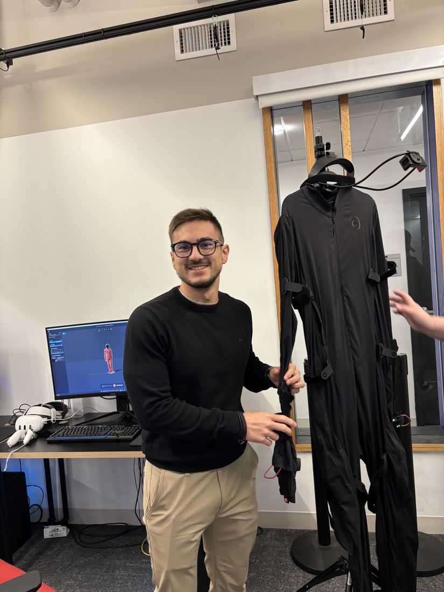
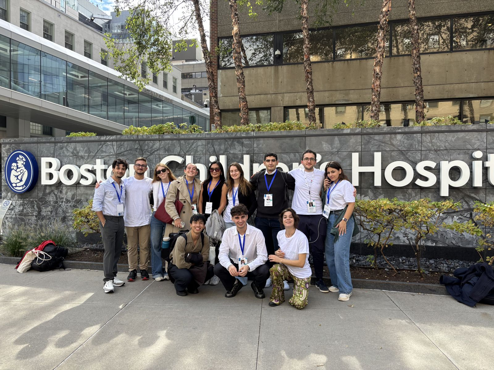

From research to clinical and industrial application
What struck me most was how concretely ambitious research projects are developed and transferred towards clinical and industrial applications, and how close — often physically — research groups with different expertise, hospitals and companies are to one another. Visits to the Koch Institute at MIT, the Langer Lab and the Wyss Institute at Harvard, the latter with Prof. David Walt, showed research models that led to the founding of Moderna and Illumina respectively.


Entrepreneurship and research funding
Meetings with The Engine, Bayer Co.Lab and CIC Scale Up Labs showed the role of venture capital, advisors and incubators in developing technologies beyond the university. From professors at Hult International Business School and from investors, I learned how a project is built, how funding is raised and how the stages of a startup differ from those of a traditional small or medium-sized company.
Technologies and people
On the scientific side, I saw additive manufacturing of biocompatible materials for biomedical applications, systems for characterising and quantifying molecules in single cells, and highly automated laboratories. Conversations with Prof. Tommaso Ranzani, on how quickly research can move towards clinical application, and with Prof. Giada Bianchi, on the relationship between research, clinical practice and career choices, were particularly valuable.

The experience strengthened my interest in the development side of research and gave me new tools to understand the links between research, innovation, funding and impact — questions that matter directly for medical robotics.